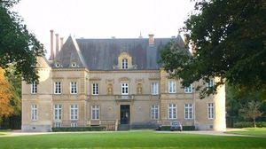
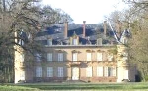
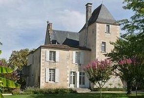
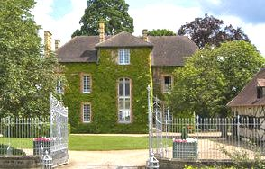
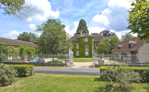

Recensement Jean-Claude Truffet





| Département | 03 — Allier |
| Canton | Chevagnes |
| Commune | Beaulon |
| Type d'édifice | Château |
| Période d'origine | XV-XIX |
Plusieurs châteaux à Beaulon, château de Treffoux du XVIII-XIXe siècle (article dans Beaulon II), de Chezelles du XVIe siècle( Idem article dans Beaulon II). de Hautmoucheron du XVIIe siècle et de Meuble du XIIIe siècle.
BEAULON, c'est vers 1480 que la famille de Vinsons fait construire le château qui prendra le nom de Beaulon en 1510, lorsque la seigneurie de Saint-Dizant est acquise par la famille de Beaulon. Au début du XVIIe siècle, monseigneur de Nesmond, évêque de Bayeux et conseiller de Louis XIV, devient par héritage le seigneur de Beaulon (La famille de Nesmond en sera propriétaire jusqu'en 1712) et le droit de haute justice est donné à la seigneurie en 1635. Il fut au XVIIe siècle, la résidence d'été des évêques de Bordeaux. Par la suite, par alliance, le château de Beaulon sera, après la famille de Nesmond, la propriété des familles de Bigot, de Brémond d'Ars, de la Porte. En 1965, le château de Beaulon devient la propriété de Christian Thomas. MEUBLE doit aussi son nom à ses anciens propriétaires; les Charbonnier qui occupaient des postes importants à la cour des Ducs de Bourbon. Marie Litaudon, auteur de plusieurs ouvrages sur l'histoire régionale y vécut. Château du Marquis de Monspey aujourd'hui hôtel restaurant Il est mentionné dans un acte de vente de 1267 par lequel Isabelle de Bourbon, veuve de Geoffroy de Blacfossés, vendit à Guillaume de Maizières diverses terres dont le Meuble. Au siècle suivant, une famille que l'on retrouve jusque vers 1556 avec Jean du Meuble, écuyer, prit le nom du fief. C'est en 1366 que l'on rencontre Claire, dame de Dompierre et Chazelles et de la terre du Meuble. En 1367 dame Marguerite du Meuble fait aveu pour la "motte, fossés et hôtel du Meuble". En 1603 et pendant une bonne partie du XVIIe siècle, les seigneurs du Meuble furent les Lanty. Le dernier seigneur, nommé Paperel de Vitry, émigra à la Révolution et le château fut confisqué le 22 floréal an II. Au XIVe, vendu suite à un partage.
Beaulon du XVIIIe siècle, caractéristique du goût de l'époque restauration, mêlant en parti architecture Renaissance et façades de style Louis XVI. Le château est formé d'un corps de logis aux extrémités duquel font retour deux ailes symétriques. A chacun des angles du quadrilatère s'élève une tour circulaire coiffée d'une poivrière, le corps de logis du XIVe siècle est surmonté d'une haute toiture d'ardoise munie de rampants à crochets. La façade nord est très intéressante car elle présente deux lucarnes de style très différent. Celle de gauche est un témoignage médiéval d'inspiration florale alors que celle de droite est de style Renaissance, flamboyante à colonnes torses. Cette dissymétrie architecturale n'enlève rien au charme de cette bâtisse qui témoigne de ses cinq siècles d'existence. L'escalier du XVIe siècle remplace sans doute une tour d'escalier polygonale à l'italienne, s'il a été rénové, a toujours fait partie de la tour originale qui est toujours présente aujourd'hui. Le pigeonnier, une tour cylindrique datée de 1740, présente un toit conique recouvert de tuiles plates de terre cuite et percé de lucarnes à frontons de pierre. Meuble, est le seul château qui ai gardé son aspect médiéval qui fut construit en 1466.
Famille de Beaulon Famille du Marquis de Monspey"
Château d Beaulon, de Hautmoucheron et Meuble.